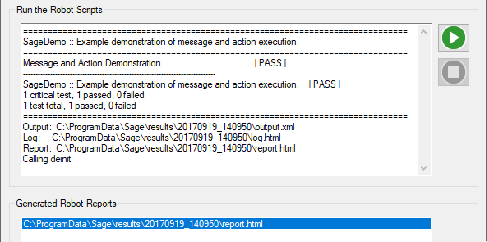
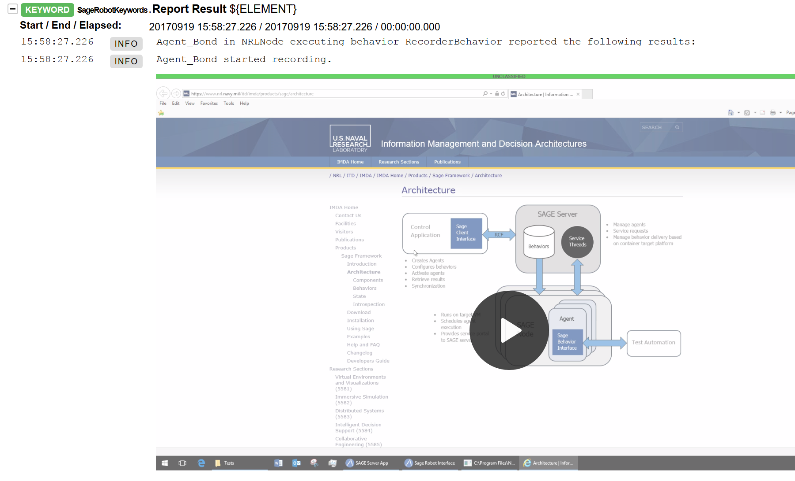

Features¶
Multiple language support
SAGE is a multi-agent framework written in C++. It is both language and operating system agnostic. The SAGE control interface supports a wide range of programming languages including: C++, Java, and Python.


Dynamic agent configuration
Dynamically construct and deconstruct agents to introduce a greater level of system control. SAGE agents can create and populate other agents with behaviors based on current operational needs. These smart agents may evolve with the system under test and enable reasoning in changing contexts, flexible configurations, and increased agent awareness.
Testing distributed systems with SAGE
SAGE provides a powerful framework for automated testing of distrubuted systems, such as SOA systems-of-systems. SAGE is not inherently a test automation technology. However, the ability to coordinate and synchonize agent activities across a distributed system under test has been used to create a test automation capability that integrates a hetrogenious set of automation technologies into a coherent test automation harness. The SAGE framework supports integration with Robot Framework, a widely used and extensible test specification and automation technology. SAGE extends Robot Framework’s capabilities to include support for building and configuring SAGE agent networks for test automation. This enables detailed test specification in Robot Framework that includes a specification of the agent network needed for an automated test. Test activies carried out by distributed agents are reported to the SAGE server providing a centralized reporting capability. These test results are used by Robot Framework to create a single report outlining test results across the distributed system.


Modular by design
SAGE Framework permits easy language agnostic extensibility and enhancement to support the introduction of new systems and ad hoc test tools. Seamlessly combine, otherwise disconnected, third-party tools and libraries to easily extend functionality.
Persistent network capability
Store network state to facilitate the automation of large scale systems. Speed up automation processes by loading SAGE node, agent, and behavior configurations to quickly restore previously saved network states.

“Robot Framework” by Robot Framework Foundation is licensed under the Apache License 2.0